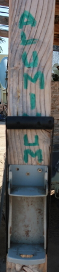
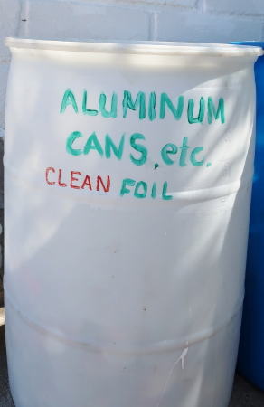
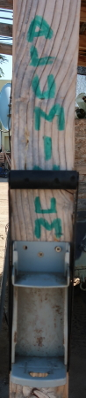
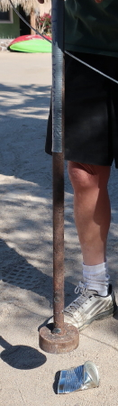
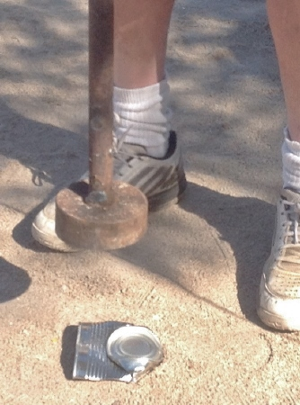
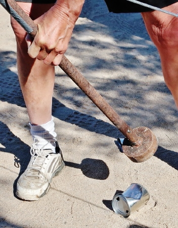

CAN CRUSHERS
|  | The aluminum can crusher is pretty straight forward, just place the ALUMINUM can in the center of the crusher and pull all the way down on the lever. | The tin can crusher takes only 3 steps. See below. |

|
We collect metal in three different areas: aluminum, tin cans, and scrap. Aluminum cans and other small aluminum items go into a barrel. Ferrous metal, like tin cans and beer bottle caps, go into a box. Scrap metal is put behind the cardboard cage for space concerns. Read more details below.
PLEASE REMEMBER THAT THIS IS NOT A GARBAGE DUMP. The 3 R's in recycling are "Rinse, Rinse, Rinse!"
|
 There is a barrel for aluminum (flattened cans, small aluminum scrap metal items, wine bottle screw caps, clean aluminum foil and products like pie plates). Please flatten cans and tins to conserve space. See how to use the can crushers below. |
Because of the weight, we no longer bag tin cans. Please place flattened tin cans in the cardboard box provided. A magnet is placed near the tin cans/aluminum cans area so that one can separate these metals more confidently. (If the magnet sticks to the can, the can goes in with the tin, otherwise, the aluminum.) Paint cans need to be empty and clean of paint. Latex paint can be washed out or cans can be cut in half and old paint pulled separate from the container. Otherwise, paint is handled as hazardous waste, which here means trash, unfortunately. |
Scrap metal is placed in cardboard boxes, if the items fit. Otherwise, place your items nearby. One may place there:
People often root through these boxes for re-usable items. What a benefit! |
|  | The aluminum can crusher is pretty straight forward, just place the ALUMINUM can in the center of the crusher and pull all the way down on the lever. | The tin can crusher takes only 3 steps. See below. |
|
1. Place the can on its side.
|
2. Place the crusher over the top two-thirds of the can and smash it.  |
3. Now that the bottom is exposed, smash it.  |
|
If the can has an unopened lid, ding the can in the middle first, then smash the top, then the bottom.
 |
So easy a child can do it! 
|